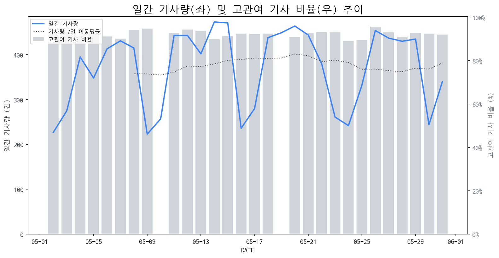

1
시장 활동 지표
기사량 추세 & 이상 징후 탐지
시장의 '전체 기사량'이 평소보다 비정상적으로 급증했는지(Spike)를 차트로 확인하고, LLM이 분석한 급등의 핵심 원인을 파악할 수 있음

고관여 기사란? 산업 연관 키워드로 수집된 기사들 중 디스플레이 키워드에 가중치를 반영하여 도출된 관련성 높은 기사
수집된 기사 수 (2026-05-31)
340
+40% WoW
기사량 변동 수준 (7일 이동평균 대비)
±6.7% 이하
2
오늘의 키워드
급격한 관심 ↑, 주목해야 할 키워드
1
엔비디아
+3.0σ
엔비디아가 PC 시장 진출 선언과 AI PC 시대 개막으로 주목받으며 관련주 급등을 견인했습니다.
Related Metrics
금일 언급량: 13, 전일 대비: +10
Interpretation
AI PC 수요 증가 기대
Next Step
'엔비디아' 관련 상세 기사 및 경쟁사 반응 모니터링
3
실시간 Risk 키워드
경계해야 할 시그널 탐지
특정 토픽의 부정 감성 점수가 급등할 때 이를 즉시 탐지하고, "근거 기사" 링크를 통해 리스크의 실체를 빠르게 파악할 수 있음
키워드 분석 결과, 오늘은 걱정할 만한 하락 신호가 없습니다. (부정 언급량 변화: +1.5σ 이내)
4
주요 이벤트 모니터링
실시간 산업 동향 파악을 위한 주요 활동
최근 발생한 주요 기업들의 신제품 출시, 투자 등 주요 이벤트를 제공하여 매일 경쟁사 동향을 확인할 수 있음
컴퓨텍스 2024에 글로벌 AI 기업들이 대거 참여하여 차세대 AI 기술력을 과시하며 AI PC 및 관련 디바이스 경쟁을 예고했습니다. 이는 AI 기술의 발전이 디스플레이 시장의 새로운 수요를 창출할 잠재력을 보여줍니다.
Impact
AI 기술 발전과 AI PC 시장 확대는 고해상도, 고주사율, 저지연 등 고성능 디스플레이에 대한 수요를 증가시키고, 새로운 폼팩터 디바이스 시장의 성장을 견인할 것으로 예상됩니다.
Next Step
AI PC 및 관련 디바이스 수요 증가에 대응하기 위해, 디스플레이 제조 기업은 AI 연산에 최적화된 고성능 디스플레이 기술 개발 및 생산 능력 강화에 집중해야 합니다.
삼성전자가 2분기에 스마트폰과 가전 사업에서 적자 위기에 직면했으며, 반면 메모리 사업 부문은 폭등하는 실적을 기록할 것으로 전망됩니다. 이는 각 사업 부문별 극단적인 실적 대비를 보여줍니다.
Impact
스마트폰 및 가전 수요 둔화는 관련 디스플레이 패널 수요 감소로 이어져 디스플레이 시장 전반의 수익성에 압박을 가할 수 있습니다.
Next Step
수익성 확보를 위해 고부가가치 디스플레이 솔루션 개발에 집중하고, 원가 절감 및 효율적인 생산 관리 전략을 강화해야 합니다.
중국 TCL이 삼성전자의 TV 시장 점유율을 빠르게 추격하며 격차를 4.1%에서 2.7% 포인트로 줄였다. 이는 TCL의 기술력 향상과 시장 공략 강화의 결과로 분석된다.
Impact
TV 시장의 경쟁 구도가 더욱 치열해지고, 프리미엄 시장에서의 기술 리더십 경쟁이 심화될 것으로 예상된다.
Next Step
기술 혁신 가속화 및 차별화된 제품 전략 강화를 통해 시장 리더십을 공고히 해야 한다.
AI 칩 시장이 이미 포화 상태에 이르렀으며, 이는 삼성전자와 SK하이닉스를 포함한 주요 반도체 공급망에 변화를 가져올 것으로 전망됩니다. 특정 AI 칩의 조기 시장 선점으로 인해 기존 공급망 구조에 재조정이 불가피할 것입니다.
Impact
AI 칩 공급망의 변화는 디스플레이 시장의 주요 고객사인 AI 반도체 기업들의 전략 변화에 직접적인 영향을 미쳐, 관련 디스플레이 수요 및 기술 개발 방향에 새로운 변수로 작용할 수 있습니다.
Next Step
AI 칩 공급망 변화 추이를 면밀히 모니터링하고, 주요 고객사의 신규 AI 칩 탑재 전략 및 디스플레이 요구사항 변화에 선제적으로 대응하기 위한 기술 및 사업 전략을 검토해야 합니다.